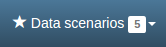
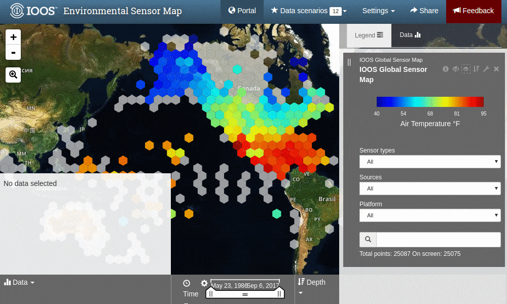

Data Scenarios¶
With the new version of the ESM you can save a collection of data from different sensors and visualize them together for comparison and analysis. The ESM calls these collections “data scenarios,” and they are accessed by clicking on the scenarios button  near the top right corner of the blue toolbar along the top of the window.
{kind=link}
Viewing an Existing Scenario¶
The ESM loads several premade data scenarios that you might like to explore. You can access these premade scenarios by following these steps:
The scenario view will open, displaying its data for you to explore. In the image below, you can see the scenario view of the Hurricane Harvey Water Level scenario.

Note
Depending on the version of the ESM you’re viewing, different scenarios will be available. If you’d like access to a particular scenario, please contact us via the red feedback button  in the top right corner of the blue toolbar.
in the top right corner of the blue toolbar.
Creating a New Scenario¶
While the premade data scenarios are interesting, the real fun starts when you begin making your own scenarios. To do so, follow these steps and consult the GIF below:
- If you’re not in the portal view, click on the portal button
 to get there
to get there - Zoom and pan to your desired map view
- Click on the hex that represents the sensor you’re interested in
- Its data will show up in the data display window in the bottom left corner of the window
- Within the data display window, click on the

- To add the data to an existing scenario, choose it from the dropdown menu
- To create a new scenario, click on the add icon

In the GIF below, we’ve zoomed in on Hawai’i and selected a sensor to view. We then added that sensor’s data to a new scenario called “My scenario.”

Customizing a Scenario¶
Once you’ve created a scenario, you can view it the same way you’d view a premade scenario described above. There are several ways you can customize your scenario. These are described below.
Describing Your Scenario¶
You can add a description to your scenario, which will appear directly underneath your scenario’s title. Your description can include valid HTML, which allows you to include links and images, as well as some basic text formatting. To add a description, follow these steps:
- Click on the gear icon
 near the top right corner of the window
near the top right corner of the window - In the popup window that appears, enter your description in the
Descriptionbox
Tip
To inlcude a link in your description, format it like this: <a href="http://www.example.com">This text will show up</a>
Note
You can also edit the title of your scenario in the same popup window.
Displaying Your Data¶
You can adjust the way the sensor data are displayed in the chart on the right-hand side of the window, including but not limited to the following:
- Scale the Y-axis (data values)
- Scale the X-axis (time)
- Re-bin the data
- Display min/max values and/or mean values
Additionally, you can explore the selected station and its data more in depth in the following ways:
- Download the data
- View the station’s historical data
- View information about the station itself from the organization that maintains it
Adding Data to a Comparison Chart¶
Comparison charts appear below the map and allow you to plot similar data from different sensors. To add data from a saved chart to a comparison chart, follow these steps:
- Click the
- Click the
Add to compare chartbox under your scenario’s name
The new data will appear in the comparison chart in a contrasting color, and the station will be added to a list below the comparison chart.
Note
Comparison charts have the same options for displaying data as saved charts, which are described above under Displaying Your Data.
Sharing a Scenario¶
Once you’ve created, customized, and explored your data scenario, you’ll probably want to share it with your friends and colleagues. To get a shareable link, follow these steps:
- Click on the share button
 near the top right corner of the blue toolbar
near the top right corner of the blue toolbar - Highlight the link that appears in the popup window
- Copy that link and paste it anywhere you’d like to share it
Note
Anyone you share a scenario with will essentially see their own version of the scenario you have created and customized. Their edits and additions will not affect your view of the scenario.